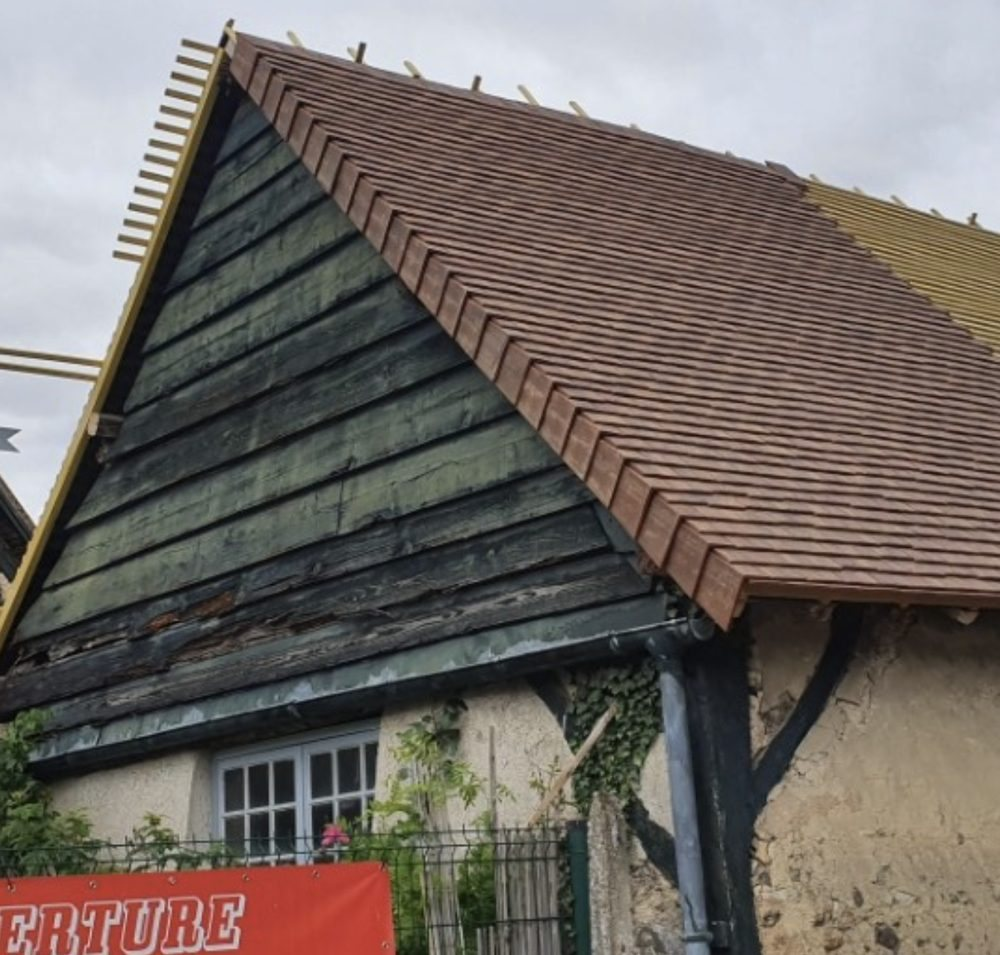
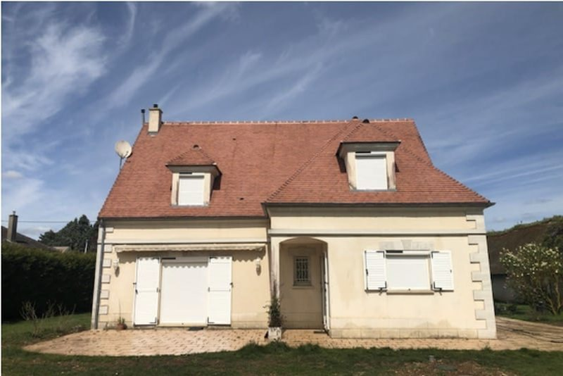
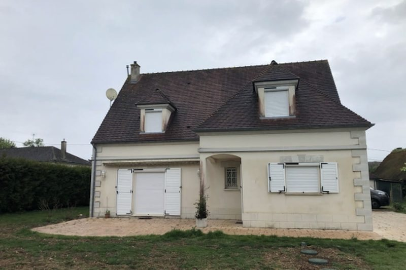

Toiture · Étanchéité · Ravalement
Couvreur à Pacy-sur-Eure : un savoir-faire qui se voit.
SC Couverture rénove et protège votre toiture dans l'Eure, l'Eure-et-Loir et les Yvelines : remplacement de toiture, étanchéité et ravalement de façade.
- 5/5 · 77 avis Google
- Devis gratuit
- Réponse sous 48 h



à 5/5
L'entreprise Provisoire
Le savoir-faire local, au service de votre toit.
SC Couverture met son expérience de couvreur au service de la rénovation de toiture dans l'Eure et les départements voisins. Chaque projet est confié à des artisans expérimentés et qualifiés, du premier rendez-vous à la fin du chantier.
Neuf ou ancien, tuile, ardoise, zinc, bac acier ou fibre : vous avez un seul interlocuteur pour la couverture, l'étanchéité et le ravalement de votre façade.
- 8prestations de couverture et de façade
- 3départements desservis
- 48 hpour être recontacté
Nos prestations
Tout ce dont votre toiture a besoin, au même endroit.
De la réparation ponctuelle à la réfection complète : une équipe, un devis, un chantier maîtrisé.
- 01
Remplacement de toiture
Tuile, ardoise, zinc, bac acier ou fibre, en neuf comme en ancien.
Demander un devis pour cette prestation - 02
Ravalement de façade
Nettoyage et remise en état de vos murs et façades.
Demander un devis pour cette prestation - 03
Étanchéité
Une toiture protégée durablement contre les infiltrations d'eau.
Demander un devis pour cette prestation - 04
Nettoyage antimousse
Traitement antimousse et nettoyage haute pression de la toiture, des murs et des façades.
Demander un devis pour cette prestation - 05
Hydrofuge
Une protection qui limite l'humidité et aide vos matériaux à durer.
Demander un devis pour cette prestation - 06
Remplacement de Velux
Pose et remplacement de fenêtres de toit pour plus de lumière.
Demander un devis pour cette prestation - 07
Reprise de pied de cheminée
Reprise de l'étanchéité autour des cheminées et des conduits.
Demander un devis pour cette prestation - 08
Gouttières
Remplacement de gouttières en zinc ou en PVC.
Demander un devis pour cette prestation
Pourquoi SC Couverture Provisoire
Un chantier de toiture, c'est d'abord une question de confiance.
Votre toit protège tout le reste. Voici ce que vous pouvez attendre en nous contactant.
Obtenir mon devis gratuit- 01
Un devis gratuit, sans engagement
Vous savez ce que coûte votre projet avant de vous décider.
- 02
Une prise de contact sous 48 h
Votre demande ne reste pas sans réponse.
- 03
Des artisans qualifiés
Artisan certifié, Maître Artisan et qualification Qualibat.
- 04
Tous les matériaux, neuf et ancien
Tuile, ardoise, zinc, bac acier, fibre : l'entreprise s'adapte à votre bâti.
Réalisations
Des chantiers réels, de la charpente à la couverture terminée.
Photographies issues du site actuel de l'entreprise. Cliquez sur une image pour l'agrandir.
Votre projet, étape par étape Provisoire
Simple, clair, sans mauvaise surprise.
- 1
Rendez-vous
Nous étudions votre toiture, vos besoins et votre budget.
- 2
Devis gratuit
Vous recevez un devis détaillé, sans engagement de votre part.
- 3
Travaux
Nos artisans réalisent le chantier selon le devis accepté.
Sur 77 avis Google
Avis clients
Ceux qui nous ont confié leur toiture en parlent.
La note de 5/5 sur Google est la meilleure garantie de sérieux. Les avis ci-dessous seront remplacés par les témoignages réels de la fiche Google.
Lire tous les avis sur GoogleEmplacement réservé à un avis client réel, repris tel quel depuis la fiche Google de l'entreprise.
Emplacement réservé à un avis client réel, repris tel quel depuis la fiche Google de l'entreprise.
Emplacement réservé à un avis client réel, repris tel quel depuis la fiche Google de l'entreprise.
Zone d'intervention
Basés à Pacy-sur-Eure, présents dans trois départements.
L'équipe se déplace dans l'Eure, l'Eure-et-Loir et les Yvelines. Votre commune n'est pas citée ? Appelez-nous, chaque demande est étudiée.
Provisoire La liste des communes desservies sera précisée avec l'entreprise.
06 22 43 75 02Questions fréquentes
Avant de nous contacter.
Le devis est-il gratuit ?
Oui. Le devis est gratuit et sans engagement.
Sous quel délai suis-je recontacté ?
Après votre demande, l'entreprise vous recontacte sous 48 h.
Quels matériaux de couverture posez-vous ?
Tuile, ardoise, zinc, bac acier et fibre, en neuf comme en ancien.
Quelles prestations proposez-vous en plus de la toiture ?
Étanchéité, ravalement de façade, nettoyage antimousse et haute pression, hydrofuge, remplacement de Velux, reprise de pied de cheminée et remplacement de gouttières en zinc ou en PVC.
Dans quels départements intervenez-vous ?
Dans l'Eure (27), l'Eure-et-Loir (28) et les Yvelines (78).
Devis gratuit
Parlons de votre toiture.
Décrivez votre projet en quelques lignes. L'entreprise vous recontacte sous 48 h avec une proposition claire.